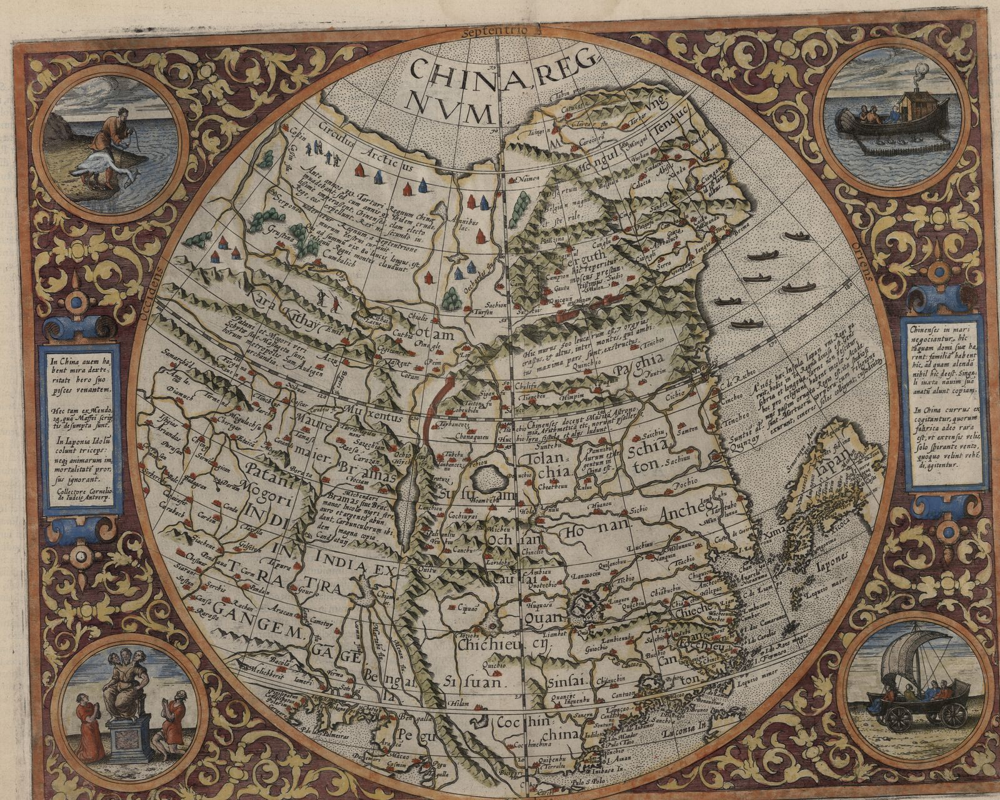

China regnum

The texts on the map are a machine transcription (Claude Opus 5.5, 25 Nov 2026), not yet reviewed by a specialist; where the project team has its own reading, the commentary gives it. The text on the back is the team's transcription and translation. [?] marks an uncertain reading.
Cornelis de Jode's map of China, Tartary and Japan, signed by Cornelis and published in 1593 in the second edition of his father Gerard's atlas, the Speculum orbis terrae; it appears in no other edition. A round map sits in a decorated frame, with four roundels from Jesuit reports: a fishing bird, Chinese families living on boats with their ducks, a three-headed idol, and the Chinese sailing wagon. An AI model, Claude Opus 5.5, read the map from the HKUST copy without any reference text: 56 texts, notes and names, which can be read in the panel and the tour, and 314 place names, shown under “Towns, rivers and lakes” in the filter. For 13 of the texts the commentary also gives the project team's own reading. Turn the sheet over for the atlas's description “China quae et Sina” (pp. 53 and 55), in the project team's transcription and translation, shown on the pages of the BnF copy.
In China auem habent mira dexteritate hero suo pisces venantem.
In China they have a bird that hunts fish for its master with wonderful dexterity.
Show on the mapIn Iaponia Idolum colunt triceps: neque animarum immortalitatem prorsus ignorant.
In Japan they worship a three-headed idol, and they are not wholly ignorant of the immortality of souls.
Show on the mapCHINA, REGNVM
China, the kingdom [Kingdom of China].
Show on the mapChinenses in mari negociantur, hîc tanquam domi suæ hærent: familiam habent hîc, ad quam alendam nihil hîc deest. Singuli iuxta nauim suam anatum alunt copiam.
The Chinese carry on trade at sea; here they cling as if at their own home. Here they have their household, for whose support nothing is lacking here. Each one keeps a supply of ducks beside his own ship.
Show on the mapIn China currus excogitantur, quorum fabrica adeo rara est, vt extensis velis, solo spirante vento, quoquo velint vehendi, agitentur.
In China carriages are devised whose construction is so unusual that, with sails spread and only the wind blowing, they are driven wherever [their riders] wish to be carried.
Show on the mapHec tam ex Mendozæ, quam Maffei scriptis desumpta sunt.
These things have been taken as much from the writings of Mendoza [Juan González de Mendoza] as of Maffei [Giovanni Pietro Maffei].
Show on the mapCollectore Cornelio de Iudeis Antverpiensi[?]
Compiled by Cornelius de Iudeis [Cornelis de Jode] of Antwerp.
Show on the mapAnte annos 313. Tartari Regnum Chinæ inuadebant, sed cum annis 93. ibidem crudelissimè imperassent, Chinenses, clam electo Rege, eos expellunt. Rex ne secundò inuaderetur Regnum, a Septentrione murum exstrui curauit. Qui ad summum vix 80 leucis longus, est. reliquum Regni montes claudunt.
313 years ago the Tartars invaded the kingdom of China, but when they had ruled there most cruelly for 93 years, the Chinese, having secretly chosen a king, drove them out. So that the kingdom should not be invaded a second time, the king had a wall built on the north side, which is at most scarcely 80 leagues long; mountains enclose the rest of the kingdom.
Show on the mapPatani et Mogori veri Schytæ siue Massagetæ sunt, horum metropolis Samarchandia,
The Patani and Mogori are true Scythians, or Massagetae; their capital city is Samarchandia [Samarkand].
Show on the mapBramas siue Bracmanos Incolæ nigri fere, auro et argento abundant, Carbunculorum ibidem magna copia.
Bramas or Bracmanos: the inhabitants are almost black; they abound in gold and silver; there is likewise a great abundance of carbuncles [rubies] there.
Show on the mapCianganor id est lacus albus.
Cianganor, that is, the white lake.
Show on the mapDesertum Belgian magnu et sterile.
The great and barren desert of Belgian.
Show on the maphîc reperitur moscus prestantissimus.
Here the finest musk is found.
Show on the mapHic murus 500 leucarum est, 7 orgyias crassus, 14[?] altus, inter montes, qui ambitus maxima pars sunt, exstructus.
This wall is of 500 leagues, 7 fathoms thick, 14[?] high, built between mountains, which make up the greatest part of its circuit.
Show on the mapChinenses docent Musicam Astronomiam, Arithmetica etc. norunt psallere, lÿra. fistula et alÿs ludunt.
The Chinese teach music, astronomy, arithmetic, etc.; they know how to play the lyre; they play the pipe and other [instruments].
Show on the mapAurum et Argentum in China est.
There is gold and silver in China.
Show on the mapAnno 1165. hæc Insula Iapan vni Regi paruit, hodie in 60 Regna diuisa est. Gens sobria et longæua, carne non vescitur, hoc pro religione habent incolæ. Academys passim ornata Regio est, ita studiosi sunt. Mortuorum corpora cum religione exurunt, cineres solos colligunt, custodiuntque.
In the year 1165 this island Iapan [Japan] obeyed a single king; today it is divided into 60 kingdoms. The people are sober and long-lived; they do not eat meat, and the inhabitants hold this as a matter of religion. The country is everywhere furnished with academies, so devoted to study are they. They burn the bodies of the dead with religious rites, gather only the ashes, and keep them.
Show on the mapCirculus Arcticus
The Arctic Circle.
Show on the mapKara Kithaÿ
Kara Kithay [Qara Khitai]
Show on the mapCotam
Cotam [Khotan, region].
Show on the mapMuxentus
Muxentus [region].
Show on the mapMaure maier[?].
Maure maier. (region name; meaning unclear as read)
Show on the mapPatani Mogori
Patani Mogori (a people)
Show on the mapSusuam
Susuam [region].
Show on the mapINDIA INTRA GANGEM.
India within the Ganges [India west of the Ganges].
Show on the mapINDIA EXTRA GANGE
India beyond the Ganges.
Show on the mapSisuan.
Sisuan [region].
Show on the mapBengalla.
Bengalla [Bengal, region].
Show on the mapPegu
Pegu [region].
Show on the mapVng.
Vng [region].
Show on the mapTenduc
Show on the mapMongul.
Mongul [region].
Show on the mapCerguth
Cerguth [region].
Show on the mapPaghia
Paghia [region].
Show on the mapSuntien alias Quinzay
Suntien, otherwise Quinzay [Hangzhou]
Show on the mapSchiaton.
Schiaton [region].
Show on the mapTolanchia.
Tolanchia [region].
Show on the mapAncheo
Show on the mapHonan.
Honan [Henan province].
Show on the mapOchian
Ochian [region].
Show on the mapCausai
Causai [region].
Show on the mapChieche
Show on the mapQuancy.
Quancy [region].
Show on the mapChichieu.
Chichieu [region].
Show on the mapFocchieu
Show on the mapCanton
Canton [Guangdong]
Show on the mapSinsai.
Sinsai [region].
Show on the mapCochinchina
Cochinchina [region].
Show on the mapLuconia Insula
Luconia island [Luzon]
Show on the mapArgenti fodinæ
Silver mines
Show on the mapIapan
Iapan [Japan]
Show on the mapIapones
The Japanese
Show on the mapOccidens
West
Show on the mapSeptentrio
North.
Show on the mapMeridies
South.
Show on the mapOriens
East
Show on the mapCHINA QVAE ET SINA.
China, that is Sina
Show on the mapDigna videbatur, lector benivole, reprehensione temeritas nostra, qui amplissimi huius regni descriptionem angusto paginæ unius aut alterius spatio includere haud dubitaremus et non potius Crispi historicorum principis imitaremur exemplu(m), qui de Carthagine silere melius putabat, quam parum dicere. Sed ratio instituti nostri poscebat, ne ullius Geographicæ Tabulæ aversa pars vacaret. Itaque quæ scitu iucundissima et utilia ex auctoribus fidelissimis carptim et saltuatim enotata hic adposui: si non pro magnitudine et excelle(n)tia regionis, saltem pro capacitate loci. Sinam (quæ Tame incolis dicta, ipsique Tangis) qui mortales initio habuerint, quiq(ue) postea accesserint, utique rem sese habere cultores eius terræ putant, ex historiis illorum et annalibus petendum censeo.
Benevolent lector, our courage seemed to blame, since we had no doubts in including a description of this wide kingdom in the little space of a page and did not follow Crispi’s example, altough he is the greatest historian and in the past he considered worthwhile avoiding to describe Carthage rather than writing few information. Nevertheless, our work’s structure required that none of the backs of the maps was black. Because of this, in this map I have pointed out all the interesting and useful information which I have extracted little by little and occasionally from the more reliable books. If not due to the prominence and excellence of the place, I did this al least due to its wherewithal. I report what are said in their histories and annals by the first inhabitants of SINA (whom inhabitants call Tame and themselves Tangis) and news from who came later or consider himself a lover of this country.
Show on the mapIngens latitissimumque regnum et quod ab Ortu solis ultimum terrarum merito existimatur : ab Occasu novissimis Indiæ terminis et Regno Bramas definitur, versus septentriones a Scythis, quos Tartaros appellant, mutuo metu aut montibus, quin et muro separatur, cetera Oceanus ambit, latos sinus et immensa littorum spatia complectens. Montes ii, qui a Borea in Austrum procurrentes, a Scythis Chinenses dirimitur, ubi interdum deficiunt, per valles atque camporum planities interiectas, muris latissimis annectuntur, quorum crassities vii habet passus, altitudo alterum tantum. In universum cinctum ille sive ambitus murorum montiu(m)q(ue) ad 500 milliaria extenditur : ita ut ex his 80 e muro manufacto constent, relinquum hoc est 420 M. P. montes occupent. Narrant Historiæ incolarum ante c. c. annos murum eum factum, per Tzintzoum regem, qui Chinam a Tartarorum tyrannide, quam ad tertium et nonagesimum iam annum tolerabant, vindicavit : tantam autem multitudinem operi fuisse intentam, ut tertius toto regno vir excitus manum admoverit.
China is properly considered a wide and extended kingdom, the last on the East: it borders with India and Brama to the west, while to the north it is separated from the Scythian, even called Tartars, due to mutual awe and mountains, in addition to a wall. The other sides, the inlets and the extended coasts are surrounded by the Ocean. The mountains, which go from the north to the south, divide the Chinese from the Scythian. Where peaks lack, interrupted by valleys and plains, they are linked by a wide wall, thick seven paces and high the same. Overall, the wall or the sequence of wall and mountains is 500 miles long, of which 80 miles are of wall and the other 420 are of mountains. Historiae incolarum say that the wall was built in less than two hundred years, ordered by the king Tzintzoum, who took revenge for the Tartarian tyranny that China bore for 93 years. So many people took part at this great endeavour, that the third king could punish the entire Tartarian kingdom.
Show on the mapRegio est maxime omnium fertilissima, tam hominum industria, quam natura sui et abundans rebus omnib(us) ad vitæ cultum necessariis, tum ad luxum tum ad elegantiam. Pecorum in montibus et pratis magna vis, in agro frumentum præsta(n)tissimum, in silvis venatio aprum, leporum, zabellinorum, aliarumq(ue) ferarum et aucupium omne genus avium. Stagna, flumina, maria piscibus refertissima. Auri, argenti, æris, ferri, aliorumque metallorum, gemmarum et unionum copia ingens. Profert et moschum, rhabarbarum, chinam radicem, alia aromata et saccharum. Nullus hic absque utilitate locus: qua in colles aut montes adsurgit, pineta sunt, sub his legumina crescunt : qua paludes solum humectant, oriza seritur, incolarum cibus
This region is the most fruitful, both for human technique and for its natural characteristics. It is rich of all kinds of things necessary to life, besides those appropriate for luxury and elegance. Mountains and pasture are plenty of sheep, fields are plenty of luxuriant wheat, woods are the place where hunt boars, hares, sables, other animals and all kinds of birds. The lakes, the rivers and the seas are rich of fishes. There is abundance of gold, silver, copper, iron and other metals, precious stones and pearls. It produces also rhubarb, mosco and other aromatic plants and sugar. In this country no place is useless: up to the hills and the mountains, there are pine grove where the beans grow; where the swamps dampen the ground, Chinese sow rice, which is their main food.
Show on the mappotissimus: aridus ager, tritico utilis est et hordeo. Sed cum sericæ telæ sit præcipuum hic mercimonium, no(n) dubium est, quin frequentes sint mori, quarum foliis bombyces ali co(n)stat. Nec de aquatilibus avibus omitti debet, tantam earum esse multitudine, et præcipue anatum, ut una in urbe (quæ tamen non inter regni maximas) ad duodena millia in cibu(m) singulis diebus vertantur.
The drier grounds are useful for wheat and barley. Since silk cloth is their main trade, there is no doubts that there is abundance of mulberry trees, whose leaves are food for the silk worms. We mustn’t omit aquatic birds, because they are so many – especially ducks – that in a single city (and not one of the biggest) up to twelve thousand animals are cooked every day.
Show on the mapIn xv provincias regnum distinctum est, quarum hæc nomina : Paghia, Tolanchia, Canton, Focchieu, Olam, Sinsai, Sisuam, Causai, Ochiam, Anchieo, Honan, Scianton, Chichieu, Chiecheam, Susua(m). Urbes metropolitano iure insignes, quæ aut mari plerumque aut fluminibus navium capacibus imminent, sunt plus minus 590 muris fossisque cinctæ, opere nostris invidendo, alia opida 1674, pagi infiniti. Neque tamen tot urbes, tot opida, tot pagi, homines qui in et sub hoc regno sunt, capiunt: bona pars in navibus degit: quarum tantus omnis generis numerus, ut diversis in locis urbium præbeant speciem, maris dorso ad x aut xii stadia carinis constrato. Hic illis domicilium est, hic lares. Et multos aiunt nauticæ habitationis assuetudine vix umquam terram attigisse.
Chinese kingdom is divided in 15 provinces, whose names are: Paghia, Tolanchia, Canton, Focchieu, Olam, Sinsai, Sisuam, Causai, Ochiam, Anchieo, Honan, Scianton, Chichieu, Chiecheam, Susua(m). According to the metropolitan law, there are more or less 590 important cities, situated near the sea or mostly near navigable rivers. They are fortified with walls and ditches, who are envied by our writers. There are 1674 smaller town and an unlimited number of villages. Nevertheless, all these cities, towns and villages are not enough for the men who lives in this kingdom and most of them live in his own boat: their number is so high, that there are some kinds in several places of the city and the sea is covered for ten or twelve stades. The boat is their home and their hearth. Someone says that many seldom come down to the mainland, because they are accustomed to their aquatic home.
Show on the mapRegi (quem maximum potentissimumque Orbis Principe(m), aliisque augustis nominibus appellant) decem millia armatorum hominum cottidie excubant. Et quando cum Tartaris continenter bello gerat, urbem illorum finibus proximam, pro regia elegit. Paquin ea est: hac nunquam, nisi bellorum urgeat necessitas, egreditur.
Scythiæ viribus, Sinenses ingenio et artibus præcellunt. Ita sæpe fit, ut a Tartaris robore superentur, ipsi vicissim non raro Scythas dolis et arte vincant. In universum regi regnoque aut stipendia faciunt aut certe sacramento tenentur equitum millia 948,350 peditum 584, 650. Hoc regni præsidium est.
Every day ten thousand soldiers keep watch to the king, whom Chinese call “the greatest and most powerful Prince of the world” or using other venerable expression. Since the king made repeatedly war against the Tartars, he chose as the royal city the closest to their borders. This city is Paquin: from here, he never goes out, except for war needs. Scythian stand out for strength, while Chinese for intelligence and technique. It often happens that Chinese are defeated by Tartarian strength, but they not infrequently win the Scythian thanks to tricks and shrewdness. In its entirety this kingdom has a defence of 948,350 horsemen and 584, 650 footmen, who are paid or ordered due commitment.
Show on the mapGenti hic color, hæc forma : qui plagam australem incolunt, colorati, qui Boreæ vicinas terras habitant, candidissimi sunt, Europæis similes. Facies lata, oculi non admodum magni, nasus aliquantum simus, barbæ pilus rarior, nec tame(n) multis forma decora deest. Viri comam alu(n)t, eamdemque decenter admodum argenteis fibulis in nodum torquent: et mulierum cirri titulique no(n) auro solum sed unionibus et gemmis prægravantur. Vestitus utriusque sextus perquam honestus, imo sumtuosus e serica varii coloris tela, auro etiam intertexto ut anni tempestas postulat: cum hyems est, zebellinoru(m), martum aliisque animantium pellibus ad vestes introrsum duplicandas utuntur. Qui tenuioris fortunæ sunt, iis gossypina linteaque vestimenta, nigro tincta colore. Equis eleganter stratis insidunt, mulieres nobiles carpentis aut sellis serica veste et auro undique tectis per urbem vehuntur. Cultus victusque lautissimus, Gallico et Germanico non absimilis, co(n)vivium scie(n)ter
People have this colour and aspect: those who live in the south are of a coloured complexion, while those who stay in the northern lands are as pale as the European. People are broad faced, small eyed, flat nosed and smooth-skinned faced, although many among them looks handsome. The men wear their hair long, winding it in a knot closed by silver hairpins. Even the women enrich their hair not only with gold, but even with pearls and precious stones. Both sexes wear fair dresses, luxurious and made of silk of different colours and embroidered with gold, according to the seasons: during winter Chinese use to cover their clothes with sable, weasel or other animal leather. The poorer wear cloths made of cotton and linen, coloured in black. They ride horses sitting on an elegant caparison; wealthy women are carried throughout the city in chariots or in litters covered with silk and gold cloths. Their standard of life and nourishment is very high, different from French and German habit.
Show on the mapinstruunt, mensis assident more nostro, non in terram inclinati, ut Persæ et Turcæ. Potare, hilarem esse, nulli probum. Circa matrimonia hunc servant morem, ut uni viro licitum sit plures ducere uxores, domi adsidue unam habet, reliquas aliis in loci alit. Adulterii poena, ultimum supplicium. Nuptias Martio potissimu(m) mense et novilunio celebrant, apparatu superbo : cantibus et symphoniis et instrumentis musicis animoru(m) curas iucundissime relaxantes. Iam ut ingenium gentis eluceat, præter alia infinita quæ memoratu dignissima, currus arte mira fabricant, quibus malum imponunt, vela addunt, ea aut laxando aut substringendo ita dirigunt, ut per camporum æquor iam non equis sed ventis qua lubet ferantur, sed quæ nostri solius inventi arbitrabamur, ea etiam illorum sunt : ars typographica et ænea tormenta. Horum usus adeo antiquus, ut quis primus excogitarit, ignoretur. Quot, quibusque characterib(us) utantur et quæ ratio apud illos scribendi, aliis multis proditum.
They organise accurate banquet, sit at the table like us and not lay on the floor like Persian and Turkish. Drinking and getting drunk is reprehensible. As for wedding, they have this tradition: a man can marry more than a wife, but he holds only one at home and hold other wives in a different place. Adultery is punished with death. They celebrate weddings rather in March and at new moon with a magnificent pomp: they mitigate their soul troubles with songs, symphony and instrumental music. Furthermore, to show their intelligence, besides many other inventions worth to be mentioned, they craft a wagon with an extraordinary technique, adding a mast and some sails, which they can drive after loosening or furling the sails, in order to travel throughout an expanse of field using wind instead of horses. Things that we thought our exclusive invention, are actually common with them: typography and bronze bullets. Their use is ancient, but it is unknown who invented them first. Many other authors report how many and which characters they use and which is their writing system.
Show on the mapPiscandi illis varii modi, sed hic adscribi dignus : cataractes sive mergus frequens in eum usum caveis servatur, hanc avem Hispani corvum marinum vocant : cum piscari animus est alimentum corvis (utar eo nomine) non præbent, ut cibi sint avidiores, dein tenui funicolo iis collum ita revinciunt comprimuntque ne pisciculos deglutire possint, post evolare e navibus sinunt qui in altum sese præcipites agunt prædam piscium sequentes : ubi collum faucesque
They fish in several ways, but this one is worth to be described here: they keep in cages mergansers, which Spaniards call sea crows: when they want to fish, they don’t feed the crows (I use this name), in order to make them greedier, then they bind and squeeze their necks with a thin cord to avoid that the birds can ingest the fish. They let the birds fly from the boats and move away looking for their prey.
Show on the mappiscibus tument, retrahuntur, piscesq(ue) eximuntur. Id toties fit, donec piscatoribus satisfactum. Qui in navibus habitant, præter piscationem, aliud ex humido elemento capiunt emolumentum. Septum sive textum arundineum faciunt, eiusdem cum navi fere longitudinis, undiq(ue) cancellatim clausum, tam in summo quam in imo, ut aer tantum et unda admitti possit: in hoc septo anatum quatuor millia commode aluntur, nidis et receptaculis circa navim collocatis, in quibus ova ponunt.
As soon as the birds have fish in their beak, the fisherman pull them back and remove the fish. This happens until the fisherman is satisfied. Those who live in boats have another edge from water: they make a fence or a paddock of wicker, as long as the boat and closed everywhere like a lattice, both on top and at the bottom, to let that air and water can pass. In this fence they can easily rise four thousand ducks, providing around the boat nests and receptacles where they can lay their eggs.
Show on the mapCeterum vita Chinensium multipartita degitur, alii tellurem excercent, alii militiam capessunt, merces alii suas evehunt, externa(m) invehunt. Nulli otiosi, nulli mendici. Rem p(ublicam) optimi et qui in disciplinis et iuris studio profecerint, temperant, alii sacris reb(us) alii sapientiæ dediti. De religione cultuque deorum hæc traduntur : cælum, solem, lunam, et stellas adorant. Deum tame(n) rerum omnium opificem et rectorem colendum credunt. Est aliud apud illos idolum triceps, cuius vultus sese invicem intuentur. Hoc eo fieri aiunt, quod unanimi inter sese sint consensu. Præterea mulieris formosæ simulachrum (Namman appellant) quæ pusionem in sunu (sic) habet, honoribus summis afficiunt. Sed et unusquisque quot lubet deos deasque et lares colit.
Other Chinese have different occupation: some cultivate the land, some join the army, some export his merchandise or import from abroad. No one is lazy and no one is a beggar. Those who have a good education and studies in low rule the kingdom, while other are devoted to religion and philosophy. About the religion and the worship of gods, writers say that they worship the heavens, the sun, the moon and the stars. Nevertheless, they believe that exist a god who has made and rules the universe. They even worship a triple headed deity; whose faces look mutually each other. They say that this happens when there is general agreement among them. Furthermore, they worship with great honour a statue of a shapely woman (called Namman), which has a little boy at the breast. Anyway, anybody worship the god or the household god who prefers.
Show on the map| On the map | Reading |
|---|---|
| Serbercho | Serbercho |
| Corasan minor | Lesser Khorasan |
| Istigias | Iſtigias |
| Ariandos | Ariandos |
| Parasan | Paraſan |
| Carabach | Carabach |
| Balch | Balkh |
| Cataisafet | Cataiſafet |
| Samarchãd | Samarkand |
| Amu lacus | Amu lacus |
| Diamuch | Diamuch |
| Siarant | Siarant |
| Sostan | Soſtan |
| Badagsan | Badakhshan |
| Chesimur | Kashmir |
| Cheng | Cheng |
| Cansa | Canſa |
| Siachene | Siachene |
| Cardem | Cardem |
| Raraßa | Raraßa |
| Termend | Termend |
| Sermẽgican | Sermẽgican |
| Pendaua | Pendaua |
| Serchis | Serchis |
| Cheregar | Cheregar |
| Reuen | Reuen |
| Daram | Daram |
| Condu | Condu |
| Fargana | Fergana |
| Rachan | Rachan |
| Mogulachsu | Mogulachſu |
| Etaicã | Etaicã |
| Curm | Curm |
| Gelfeten[?] | Gelfeten[?] |
| Taxila | Taxila |
| Pandan | Pandan |
| Iarchẽ | Iarchẽ |
| Tenchut | Tenchut |
| Melichberit | Melichberit |
| Mogus[?] | Moguſ[?] |
| Polarim | Polarim |
| Tipura | Tipura |
| Bacola | Bacola |
| Ceregare[?] | Ceregare[?] |
| Grustina | Gruſtina |
| Aracan | Arakan |
| Condilipatan | Condilipatan |
| Pipilipatan | Pipilipatan |
| Corandi | Corandi |
| Serponou | Serponou |
| Coßin flu. | Coßin flu. |
| Xibuas | Xibuas |
| Coßin | Coßin |
| Cascar | Kashgar |
| Borata | Borata |
| Audegen | Audegen |
| Iameri | Iameri |
| Tamasi | Tamaſi |
| Gour | Gaur |
| Ganges flu. | Ganges River |
| Camotaÿ | Camotaÿ |
| Angeli | Angeli |
| Caradris fl. | Caradris fl. |
| P. de las Palmeiras | Point Palmyras |
| Aczu | Aksu |
| Emil | Emil |
| Candataÿ | Candataÿ |
| Cumbalich | Khanbaliq [Beijing] |
| Verma | Verma |
| Bikana | Bikana |
| Beperi fl. | Beperi river |
| Oby flu. | Ob river |
| Raosa | Raoſa |
| Satogã | Satogã |
| Pon | Pon |
| Cosmin flu | Cosmin river |
| Vociam | Vociam |
| Turris lapidea mons | Stone Tower mountain |
| Mechenderi | Mechenderi |
| Carazan | Carazan |
| Dar[illegible]emorri | Dar[illegible]emorri |
| Sazechiam | Sazechiam |
| Chatiqe | Chatiqe |
| Kithai Lacus | Lake Kithai |
| Martabã flu. | Martaban river |
| Chiama lac. | Lake Chiama |
| Cogicamri[?] | Cogicamri[?] |
| Aracã | Arakan |
| Cosmim | Coſmim |
| Macao | Macao |
| Taskent | Tashkent |
| Menan flu. | Menan river |
| Cuthia | Cuthia |
| Ochio siue Hoÿchioy | Ochio ſiue Hoÿchioy |
| Cotam | Khotan |
| Bengalla | Bengalla |
| Chialis | Chialis |
| Pinegle | Pinegle |
| Quitu | Quitu |
| Lanchiou | Lanchiou |
| Peim | Peim |
| Ta[illegible]galla | Ta[illegible]galla |
| Pegu | Pegu (Bago) |
| Palianliu | Palianliu |
| Iratuzi | Iratuzi |
| Veuhiu | Veuhiu |
| Tanbanceznu | Tanbanceznu |
| Tayhancozi | Tayhancozi |
| Tubehu | Tubehu |
| Hilam | Hilam |
| Cochiuyai | Cochiuyai |
| Canchu | Canchu |
| Lobeuhidu | Lobeuhidu |
| Lop | Lop |
| Annibus lac. | Lake Annibus |
| Toziohu | Toziohu |
| Cipuaõ | Cipuaõ |
| Chanaquieu | Chanaquieu |
| Pehiou | Pehiou |
| Oechardes flu | Oechardes river |
| Taiton fu | Taiton fu |
| Turfon | Turfon |
| Hoamtẽhu | Hoamtẽhu |
| Sigan fu | Sigan fu |
| Quichio | Quichio |
| Sachion | Sachion |
| Lavidohu | Lavidohu |
| Micheu | Micheu |
| Bicipuri | Bicipuri |
| Huchio | Huchio |
| Trachio | Trachio |
| Sanci | Sanci |
| Camul | Camul |
| Douchio | Douchio |
| Chulifu | Chulifu |
| Naiman | Naiman |
| Succuir | Succuir |
| Chor | Chor |
| Tiancheu | Tiancheu |
| Chinclio | Chinclio |
| Ambiau | Ambiau |
| Taingin | Taingin |
| Holanuu | Holanuu |
| Huquosa | Huquosa |
| Quotechio | Quotechio |
| Carchi | Carchi |
| Suntehu | Suntehu |
| Quibenhu | Quibenhu |
| Cheatheuu | Cheatheuu |
| Terralta | Terralta |
| Ezina | Ezina |
| Liambat | Liambat |
| Campion | Campion |
| Quicquñ | Quicquñ |
| Gauta | Gauta |
| Quancÿc | Quancÿc |
| Ergimul | Ergimul |
| Tabin prom. | Cape Tabin |
| Himpim | Himpim |
| Catacora | Catacora |
| Iñquenhu | Iñquenhu |
| Hoyam | Hoyam |
| Sansyn. | Sansyn. |
| Luluu | Luluu |
| Lancaociu | Lancaociu |
| Quiohu | Quiohu |
| Quinchio | Quinchio |
| Pulo S. Polo | Pulo S. Polo |
| Tartar flu | Tartar river |
| Sat[illegible]tana | Sat[illegible]tana |
| Quanci | Quanci |
| Carocorã | Karakorum |
| Iudilo | Iudilo |
| Mulon | Mulon |
| Guiochio | Guiochio |
| Pamnihu | Pamnihu |
| Huanou | Huanou |
| Canglu | Canglu |
| Sontanu | Sontanu |
| Inibasa In. | Inibasa In. |
| Paquin | Paquin |
| Chilauchin | Chilauchin |
| Candachina | Candachina |
| Quilanchuu | Quilanchuu |
| Vonchio | Vonchio |
| Suidio | Suidio |
| Belgian mons | Belgian mountain(s) |
| Lãpaçao | Lãpaçao |
| Lambienuhu | Lambienuhu |
| I. Ainan | Hainan Island |
| Linquou | Linquou |
| Pulo Taio | Pulo Taio |
| I. do Mandar | I. do Mandar |
| Cantaon | Cantaon |
| Rio[?] Cantaon | Canton river |
| Tichio | Tichio |
| Cingui | Cingui |
| Quachiu | Quachiu |
| Mongul | Mongul |
| I. das Iubames | I. das Iubames |
| Tartar | Tartar |
| Sichio | Sichio |
| Luchiuu | Luchiuu |
| Vncham | Vncham |
| Calacia | Calacia |
| Pazanfu | Pazanfu |
| Ciangli | Ciangli |
| Toncheo | Toncheo |
| Sarchiu | Sarchiu |
| Sindacui | Sindacui |
| Sachio | Sachio |
| Pautim | Pautim |
| Buchio | Buchio |
| Sandri | Sandri |
| I. Sancho a | I. Sancho a |
| Nanquin | Nanjing |
| Serra | Serra |
| Achbaluch | Achbaluch |
| Faqum | Faqum |
| Abisis | Abiſis |
| Chiãbuchiu. | Chiãbuchiu. |
| I. Beniaga | I. Beniaga |
| Ponte | Ponte |
| Cambalu | Khanbaliq (Beijing) |
| Gouza | Gouza |
| Cichio | Cichio |
| Xandu | Xandu |
| Macao | Macau |
| Sachiuu | Sachiuu |
| Mōlunuu | Mōlunuu |
| Teachio | Teachio |
| Guenganfu | Guenganfu |
| Iubu | Iubu |
| Pochio | Pochio |
| Chiãchiu | Chiãchiu |
| Samton | Samton |
| Huquian | Huquian |
| R. do Sal | R. do Sal |
| I. Branco | I. Branco |
| Zacabir[?] | Zacabir[?] |
| Chiquion | Chiquion |
| Caidu | Caidu |
| Iangio | Iangio |
| Liamtõ | Liamtõ |
| Ancheo | Ancheo |
| Chabaqueo[?] | Chabaqueo[?] |
| I. Bonauẽtura | I. Bonauẽtura |
| Exandu | Exandu |
| Tenduc | Tenduc |
| Hōlepao | Hōlepao |
| Chinch: | Chinch: |
| Iambuhu | Iambuhu |
| Quialisut | Quialisut |
| I. de Lamao | I. de Lamao |
| Bucheo | Bucheo |
| Munlunua | Munlunua |
| Hucheouu | Hucheouu |
| Tinzu | Tinzu |
| Tārtabo | Tārtabo |
| Tacho | Tacho |
| Liam po | Ningbo (Liampo) |
| Lailo | Lailo |
| Sua[illegible]cheo | Sua[illegible]cheo |
| Cincheo | Cincheo |
| Costa de Cooira | Costa de Cooira |
| Tencheo | Tencheo |
| C. de Richeo | C. de Richeo |
| Brema | Brema |
| Chan | Chan |
| Auarela | Auarela |
| Cumbor | Cumbor |
| Nixaxuma | Nixaxuma |
| I. La[illegible]ronu | I. La[illegible]ronu |
| Lumbacano | Lumbacano |
| Lequeio minor | Lequeio minor |
| I. do Cavalos | I. do Cavalos |
| C. de Liam po | C. de Liam po |
| I. dos Camaranes | I. dos Camaranes |
| Gaigo[?] | Gaigo[?] |
| I. Formosa | Taiwan |
| Xima | Xima |
| Firando | Hirado |
| I. do Rees magos | I. do Rees magos |
| Semariaque | Semariaque |
| Xima | Xima |
| Fa[illegible]ta[?] | Fa[illegible]ta[?] |
| Funaium | Funaium |
| Ximonoxecchi | Ximonoxecchi |
| Arima | Arima |
| Bungo | Bungo |
| Igucho | Igucho |
| Amanguco | Yamaguchi |
| Aman | Aman |
| Iosuques | Iosuques |
| Tousa | Tousa |
| Cangoxima | Kagoshima |
| Touni | Touni |
| Lequeio maior | Lequeio maior |
| Tonsa | Tonsa |
| Vxim | Vxim |
| Aquita | Aquita |
| Muro | Muro |
| Xicoca | Shikoku |
| Fore | Fore |
| Fiongo | Fiongo |
| Meacum | Kyoto (Meaco) |
| Nara | Nara |
| Imoris | Imoris |
| Ozaqua | Osaka |
| Zacai | Sakai |
| Tochis | Tochis |
| Cumano | Cumano |
| Casai | Caſai |
| Saua | Saua |